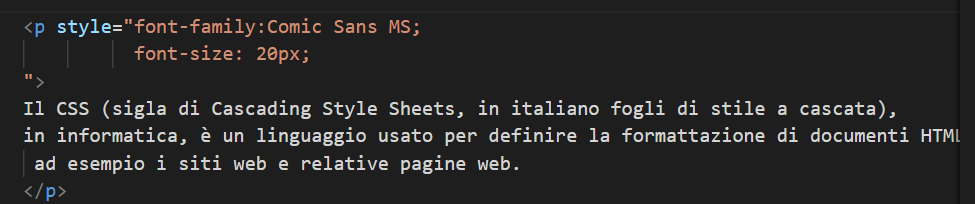

In Html si usa l' attributo "font-family" sotto il macroattributo style. Inoltre si puo segliere anche la dimensione usando l'attributo "font-size".
adesso proviamo con un paragrafo

Questo sarà il risultato
Il CSS (sigla di Cascading Style Sheets, in italiano fogli di stile a cascata), in informatica, è un linguaggio usato per definire la formattazione di documenti HTML, XHTML e XML, ad esempio i siti web e relative pagine web.